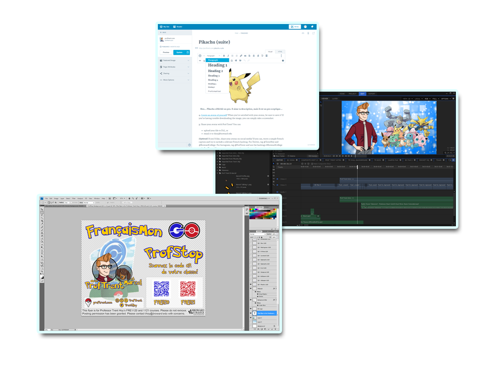

If you'd like to know more about the French activities from the original FrançaisMon GO, peruse the guide I wrote for other Broward College instructors.
Interested in how I put together FrançaisMon GO and how you could make a similar activity of your own? Hopefully this look into the development process will give you some ideas! It's quite an undertaking, so I've divided it into a few different phases: